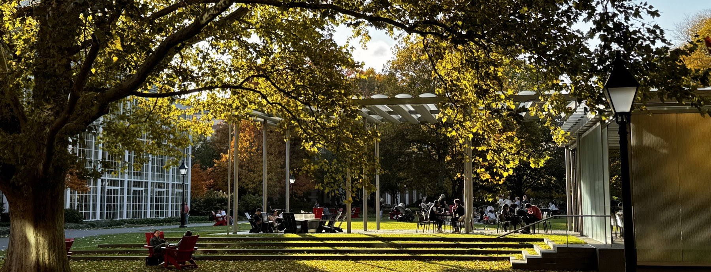

Capital
Checks too small to matter
A single classmate's angel check rarely moves a round, and a handful of them never adds up to a meaningful position.
Twenty28 Ventures is organized by members of the Harvard Business School Class of 2028 to back the founders in our class: one coordinated check, and the whole class behind it.

Why now
Classmates have the conviction and the access. What has been missing is a way to act on them together.
Capital
A single classmate's angel check rarely moves a round, and a handful of them never adds up to a meaningful position.
Coordination
Class checks get written one at a time, in isolation: no shared pipeline, no shared diligence, and no record that any of it happened.
Network
Roughly 900 classmates carry roughly 900 distinct networks. Without a way to pool them, a founder only reaches the few people they already know.
Our approach
Twenty28 Ventures brings the class together under a single vehicle, so backing a Class of 2028 founder becomes the default rather than a one-off. We do not try to pick winners between classmates. Every opportunity is measured against three objective criteria, alongside an institutional lead.
Criterion 01
At least one founder is a member of the HBS Class of 2028.
Criterion 02
At least $500,000 raised concurrent with our investment. Our own check counts toward the threshold.
Criterion 03
A qualified venture firm leads the round, or is already on the cap table, and sets price and terms.
When all three are met, we aim to commit quickly. Our edge is not judgment; it is proximity, relationships and speed. The lead does the price discovery, and we bring the signal and the momentum.
For founders
One cap-table line. One point of contact. Hundreds of classmates behind it.
Raising, or about to? Write to us at twenty28ventures@gmail.com.
The numbers
The deal flow exists, it is growing, and institutional investors are already backing it.
17%
of the HBS Class of 2025 started their own business, more than double the rate five years earlier.
155
new founders in the Class of 2025 alone. Over a third met their co-founder at HBS.
31 of 100
of the highest-funded MBA startups of 2025 came out of HBS, more than any other program.
$84.6B
raised all-time by 1,757 companies built by HBS MBA founders.
Sources: Poets&Quants and HBS Class of 2025 employment and founder reporting; PitchBook 2025 Top Universities by MBA founders; NextView Ventures analysis of MBA unicorn founders. Figures as reported 2025–2026.
We read every YC founder bio from W20 through S27. Of 243 founders with an MBA, 57 came from HBS: 23.5% of the total, more than Stanford GSB, and more than Wharton and MIT Sloan combined. HBS's share has risen from 15% in 2020 to 40% in 2026.
Source: Y Combinator founder directory and company pages, retrieved October 2026. 4,201 company pages parsed; 8,080 founder bios searched.
Precedent
Class funds at HBS and Stanford GSB have already shown that classmates can back the founders emerging from their own year.
The first self-organized HBS class fund, started by seven students.
Built by six classmates; has backed 13 companies from a single GSB cohort.
Built by two classmates; backed 16 companies. Every GSB class since has run the same template.
Sources: Poets&Quants and The Harvard Crimson on Twenty25 Ventures (April 2025); TechCrunch and Poets&Quants on the Stanford GSB 20|20 Fund.
Community
Venture and company-building are multi-round, multi-decade games. We want the class to play them as one team, whether or not we end up on the cap table.
Cadence
A standing rhythm that brings VCs, operators and founders together.
Fundraising
Working alongside class founders as they raise, and opening doors to relevant investors.
Coverage
A scout in every section, so no founder in the class goes unseen.
Alumni
Established VCs, operators and founders from the HBS community who help our founders.
Advisors
The team